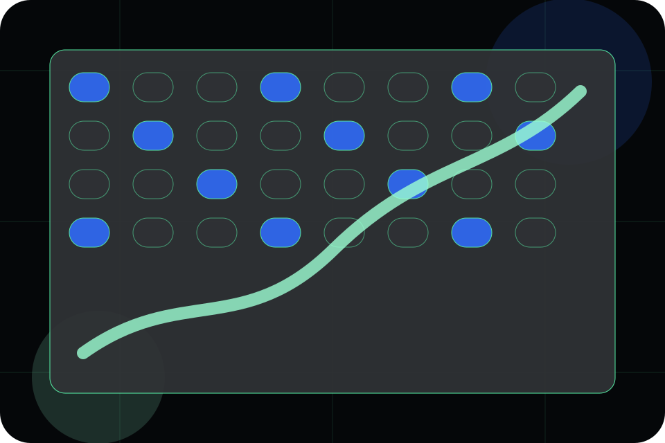
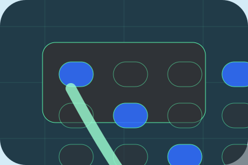

Context
Purpose gives the page a specific angle instead of repeating the navigation label.
Trials / 01
Trials opens as a clear life sciences decision hub: what Helix offers, who it helps, why it matters, and which route to take first.
The first screen combines positioning, proof, primary action, and fast internal navigation, so people can act immediately or compare the rest of the trials route with context.
AI biology lab hero
Select the closest route and Helix keeps the next step, proof, and follow-up expectation aligned with evidence and scientific credibility.

Trials / 02
Purpose adds technical context to the trials route, using the scientific operating system dossier structure to support evidence and scientific credibility before visitors choose a next step.
Helix uses pipeline evidence cards and focused copy to make the decision easier to scan, aligning the section with evidence and scientific credibility rather than filling space.
Explore TrialsPurpose gives the page a specific angle instead of repeating the navigation label.
The pipeline evidence cards show what to compare, what to avoid, and what matters most for life sciences, pharmaceuticals & biotechnology visitors.
The final cue points to a useful internal route so the section keeps the journey moving.
Trials / 03
Eligibility adds technical context to the trials route, using the scientific operating system dossier structure to support evidence and scientific credibility before visitors choose a next step.
Helix uses pipeline evidence cards and focused copy to make the decision easier to scan, aligning the section with evidence and scientific credibility rather than filling space.
Explore TrialsEligibility gives the page a specific angle instead of repeating the navigation label.
The pipeline evidence cards show what to compare, what to avoid, and what matters most for life sciences, pharmaceuticals & biotechnology visitors.
The final cue points to a useful internal route so the section keeps the journey moving.
Trials / 04
Sites adds technical context to the trials route, using the scientific operating system dossier structure to support evidence and scientific credibility before visitors choose a next step.
Helix uses pipeline evidence cards and focused copy to make the decision easier to scan, aligning the section with evidence and scientific credibility rather than filling space.
Explore TrialsSites gives the page a specific angle instead of repeating the navigation label.
The pipeline evidence cards show what to compare, what to avoid, and what matters most for life sciences, pharmaceuticals & biotechnology visitors.
The final cue points to a useful internal route so the section keeps the journey moving.
Trials / 05
Protocol adds technical context to the trials route, using the scientific operating system dossier structure to support evidence and scientific credibility before visitors choose a next step.
Helix uses pipeline evidence cards and focused copy to make the decision easier to scan, aligning the section with evidence and scientific credibility rather than filling space.
Explore TrialsProtocol gives the page a specific angle instead of repeating the navigation label.
The pipeline evidence cards show what to compare, what to avoid, and what matters most for life sciences, pharmaceuticals & biotechnology visitors.
The final cue points to a useful internal route so the section keeps the journey moving.
Trials / 06
Safety adds technical context to the trials route, using the scientific operating system dossier structure to support evidence and scientific credibility before visitors choose a next step.
Helix uses pipeline evidence cards and focused copy to make the decision easier to scan, aligning the section with evidence and scientific credibility rather than filling space.
Explore TrialsSafety gives the page a specific angle instead of repeating the navigation label.
The pipeline evidence cards show what to compare, what to avoid, and what matters most for life sciences, pharmaceuticals & biotechnology visitors.
The final cue points to a useful internal route so the section keeps the journey moving.
Trials / 07
Patients adds technical context to the trials route, using the scientific operating system dossier structure to support evidence and scientific credibility before visitors choose a next step.
Helix uses pipeline evidence cards and focused copy to make the decision easier to scan, aligning the section with evidence and scientific credibility rather than filling space.
Explore TrialsHelix structures patients around context, judgment, and a clear next route so visitors can compare the block quickly before they discuss the research fit.
Discuss ResearchTrials / 08
Teams introduces the people, roles, or specialist credibility behind Helix so the decision feels less anonymous.
The copy ties names, roles, credentials, or availability back to the decision on the page instead of treating profiles as decorative biographies.
Explore TrialsThe person, team, or specialist function connected to teams is easy to understand.
Credentials, responsibilities, or availability are tied to the visitor's decision, not listed for decoration.
The section explains how to move from profile interest to a practical conversation or booking path.
Trials / 09
Questions handles buying doubts directly so visitors can understand timing, fit, limits, and the safest next step.
Answers are short by design: enough to remove hesitation, not so much that the page turns into documentation before the visitor can act.
Open ContactQuestions gives the page a specific angle instead of repeating the navigation label.
The pipeline evidence cards show what to compare, what to avoid, and what matters most for life sciences, pharmaceuticals & biotechnology visitors.
The final cue points to a useful internal route so the section keeps the journey moving.
Helix starts with a focused intake so the recommendation matches the visitor's context, risk, timing, and readiness.
Each route explains inclusions, exclusions, documents, timing, and the decision points that affect final delivery.
The theme uses scientific operating system dossier, pipeline evidence cards, and pipeline tabs, publication filters, trial eligibility toggle rather than a shared template rhythm.
AI biology lab hero
Select the closest route and Helix keeps the next step, proof, and follow-up expectation aligned with evidence and scientific credibility.
Trials / 10
Helix closes the trials route with a clear action, a quick reminder of the value, and a low-friction way to discuss the research fit.
Visitors who are ready can use the primary action. Visitors who are still comparing can scan the section links, proof, and support routes before they discuss the research fit.
Discuss ResearchThe final block keeps the choice simple: act now, compare one more proof route, or send enough detail for a focused response.
Discuss Researchevidence and scientific credibility
A research platform story built around AI discovery, phase tables, partner proof, and data-scale credibility. Trials ends with a direct path to discuss the research fit, plus enough context for visitors who still need to compare.

Discuss ResearchInformation is provided for planning and should be reviewed for the final client, location, and operating rules.